FlashAttention-3：靠异步执行与低精度，让注意力在 Hopper 上又快又准
FlashAttention-3: Fast and Accurate Attention with Asynchrony and Low-precision
GitHub star 为 2026-10-20 的快照。阅读状态、进度与收藏只保存在你的浏览器里。
逐节精读
这部分按论文（arXiv v2）的章节顺序，用本站自己的话把整篇论文从头讲一遍；附录里的反向传播算法、SASS 分析、三级流水和完整的 FP8 测速结果，放进了正文对应的小节。读懂某个概念需要的背景知识，会在第一次用到它之前单独讲清楚（青色框）。这篇论文在 arXiv 上以 CC BY 4.0 发布，所以页面里直接使用了论文的原图，并在每张图下说明怎么看；原图没画到的概念，用本站的示意图补上。标“推算”的数字是本站根据论文数据算出来的，不是论文原话。每节末尾有英文原文的链接。
0 导读：这篇论文解决什么问题
FlashAttention 系列解决的是同一个问题：注意力要让每个 token 和所有 token 打分，标准实现会把 \(N\times N\) 的分数矩阵写进显存再读出来，时间大多花在搬运上。第一代 FlashAttention（2022）把 \(Q,K,V\) 切成小块，在芯片上的小存储里用“在线 softmax”一块一块地算完，从不把 \(N\times N\) 的矩阵写回显存；FlashAttention-2（2023）重新安排了并行方式和线程分工，在 A100 上用到了理论峰值的 50–73%。这两代都没有改变注意力的计算结果，只改变了“怎么组织计算”。
问题出在下一代硬件上。2022 年发布的 H100（Hopper 架构）矩阵乘算力比 A100 高出很多，可 FlashAttention-2 在 H100 上只能用到约 35% 的算力，而同一张卡上优化得好的矩阵乘内核能用到 80–90%。原因不在于数据搬得多，而在于 Hopper 加了一批新能力，FlashAttention-2 一个都没用上：搬运数据的专用单元 TMA 和做矩阵乘的 Tensor Core 指令 WGMMA 都是异步的，发出指令的线程不必等它完成；Tensor Core 还支持 FP8 低精度，吞吐是 FP16 的两倍。FlashAttention-2 是按照 A100 那种“发一条指令、等它做完、再发下一条”的同步模型写的。
FlashAttention-3 的工作，就是在不改变数学的前提下，把注意力重新编排成适合 Hopper 的样子。它有三个想法：第一，让一部分线程专门负责搬数据、另一部分专门负责计算（warp 专业化的生产者–消费者流水），搬运和计算同时进行；第二，softmax 里的指数运算比矩阵乘慢得多，于是让两组线程轮流使用 Tensor Core（乒乓调度），并在一组线程内部把相邻两次迭代错开（两级流水），让 softmax 尽量藏在矩阵乘的背后；第三，为 FP8 解决 Tensor Core 对数据排布的限制，并用块量化和“非相干处理”（乘一个随机正交矩阵把离群值摊开）降低 FP8 的误差。
arXiv 版报告的结果是：在 H100 SXM5 上，FP16 前向比 FlashAttention-2 快 1.5–2.0 倍，最高 740 TFLOPs/s（理论峰值的 75%），反向快 1.5–1.75 倍；FP8 前向接近 1.2 PFLOPs/s；在带离群值的测试数据上，FP8 版本的误差比“逐张量量化”的基线 FP8 注意力低 2.6 倍。NeurIPS 正式版换了更新的软件环境，数字更高：BF16 最高 840 TFLOPs/s（85%），FP8 达到 1.3 PFLOPs/s（见第 6 节）。
和第一代相比，这篇论文关心的问题换了层次。第一代问的是“需要搬多少数据”，答案是一个 IO 复杂度；这篇问的是“在一张具体的 GPU 上，哪个单元在什么时刻做什么”，答案是一套指令编排。在线 softmax 的数学几乎没变，所以本页只用几段话回顾它，把大部分背景知识留给 Hopper 硬件本身。
读完这部分，你应该能回答这几个问题：
- 同样是 IO 最优的算法，FlashAttention-2 为什么在 H100 上只能用到约 35% 的算力？
- TMA、WGMMA、warpgroup、warp 专业化、
setmaxnreg各是什么，它们怎样让“搬数据”和“算”同时进行？ - 为什么 softmax 里的指数运算会成为瓶颈？乒乓调度和两级流水分别怎么把它藏起来？
- FP8 的 Tensor Core 对数据排布有什么限制，FlashAttention-3 怎样在内核里绕开它？
- 块量化和非相干处理为什么能降低 FP8 的误差？那个“2.6 倍”是在什么数据上测的？
- 740 TFLOPs/s、1.2 PFLOPs/s 这些数字是在什么头维、序列长度、有无因果掩码下测的，和谁比、该怎么读？
1 引言：为什么 IO 最优的 FlashAttention-2 在 H100 上跑不满
对一个注意力头，输入是 \(Q,K,V\in\mathbb{R}^{N\times d}\)（\(N\) 是序列长度，\(d\) 是头维）。FlashAttention 把 \(Q\) 按行切成若干块 \(Q_{i}\)（每块 \(B_{r}\) 行），把 \(K,V\) 切成若干块 \(K_{j},V_{j}\)（每块 \(B_{c}\) 行）。处理 \(Q_{i}\) 时，依次读入每一块 \(K_{j},V_{j}\)，在芯片上算出这一小块分数 \(S=Q_{i}K_{j}^{\top}\)，然后用“在线 softmax”把它并入已有的结果。在线 softmax 只需要为每一行记住两个数：到目前为止见过的最大分数 \(m\) 和指数和 \(\ell\)。每来一块新分数，就按下面的规则更新：
乘 \(e^{m-m^{\mathrm{new}}}\) 的意思是：旧的累加结果是以旧的最大值为基准算的，现在最大值变大了，就把旧结果整体缩小，换到新的基准上，这样新旧两部分才能直接相加。所有块处理完后，\(O/\ell\) 就是精确的注意力输出；同时存下 \(L=m+\log\ell\)，反向传播时用它重新算出 softmax 概率，而不必保存 \(N\times N\) 的概率矩阵。具体推导和一个手算例子见 FlashAttention 精读页第 3 节。
FlashAttention-2 保留了这套数学，改的是工作怎么分：除了按批和注意力头并行，还沿序列长度把不同的 \(Q_{i}\) 分给不同的线程块，内循环改成遍历 \(K,V\) 的块，并减少了矩阵乘以外的运算。这些改动让它在 A100 上快了约一倍（见 FlashAttention 精读页“后来怎么样了”）。FlashAttention-3 直接在 FlashAttention-2 的循环结构上改造。
论文首先给出一个对比：在 H100 上，优化好的矩阵乘（GEMM）内核能用到理论峰值的 80–90%，FlashAttention-2 只有 35%。作者认为原因有两层。表层原因是实现层面的：FlashAttention-2 在 Tensor Core 上用的还是 Ampere（A100）那一代的指令，没有换成 Hopper 专用的指令。作者引用了 ThunderKittens 和 cuDNN 9 两项工作作为旁证：它们改用 Hopper 专用的指令和以“块”为单位的编程抽象之后，注意力确实变快了，代码也更简单。
更根本的原因在算法层面。FlashAttention-2 遵循的是一个简化的同步模型，设计里没有显式地考虑两样东西：
- 异步。为了加速机器学习里最重要的那几种操作，硬件越来越“专业化”：做矩阵乘有专门的 Tensor Core，搬运数据有专门的张量内存加速器 TMA（Tensor Memory Accelerator），它们独立于负责逻辑、整数和普通浮点运算的 CUDA 核。专门单元在后台干活时，发出指令的线程可以去干别的，这就是异步。想吃到这份好处，就得让不同单元的工作在时间上重叠起来。
- 低精度。论文列了一条趋势线：FP16（Pascal 架构）、BF16（Ampere 架构）、FP8（Hopper 架构）、FP4（Blackwell 架构）。每降低一次精度，在同样的功耗和芯片面积下，吞吐大约翻一倍甚至翻两倍。
把这两样用起来并不简单。异步要求矩阵乘和 softmax 在时间上重叠，可它们之间有依赖：softmax 要用第一个矩阵乘 \(QK^{\top}\) 的结果，第二个矩阵乘 \(PV\) 又要用 softmax 的结果。低精度则要求认真控制量化误差，尤其是大语言模型里常见的离群值（少数几个数值比其他数大几十上百倍）会让低精度格式很难同时照顾到大数和小数。
针对这些困难，论文提出三个贡献，后面第 3 节逐一展开：
- 生产者–消费者异步。把一个线程块里的 warp 分成“生产者”和“消费者”两种角色：生产者只负责搬数据，消费者只负责计算。这样数据搬运和 Tensor Core 计算可以重叠，内存延迟和指令发射延迟都更容易被藏起来。
- 把 softmax 藏在异步的分块矩阵乘下面。softmax 里的乘加和指数运算吞吐远低于矩阵乘。论文改造了 FlashAttention-2 的循环，打破 softmax 和矩阵乘之间的一部分先后依赖，让 softmax 在 Tensor Core 计算下一块的同时进行。
- 用上 FP8 Tensor Core。前向传播改用 FP8 做矩阵乘，论文说实测的 TFLOPs/s 接近翻倍（第 4.4 节会看到，按图上的读数是 1.2–1.6 倍）。这要解决 FP32 累加结果和 FP8 操作数在寄存器里排布不一致的问题，并用块量化和非相干处理减小精度损失。
实验在 H100 SXM5 上做，结论有四条：FP16 前向比 FlashAttention-2 快 1.5–2.0 倍（最高 740 TFLOPs/s），反向快 1.5–1.75 倍；FP8 接近 1.2 PFLOPs/s；序列较长时，FP16 版本超过 NVIDIA cuDNN 库里的注意力实现，FP8 版本与之互有胜负（论文脚注：头维 64 时 FP8 领先；头维 128 和 256 时，无因果掩码打平、有因果掩码落后）；FP16 版本的数值误差和 FlashAttention-2 相同，比标准实现小，FP8 版本在有离群值的数据上比逐张量量化的标准 FP8 注意力准 2.6 倍。代码以宽松的开源许可发布在 FlashAttention 官方仓库的 hopper/ 目录。
- “35%”“75%”指的是占 H100 SXM5 稠密 FP16 理论峰值 989 TFLOPs/s 的比例，分子是按公式算出来的注意力 FLOPs 除以实测时间（第 4 节详细讲），不是用硬件计数器测出的实际运算量。
- FlashAttention-3 没有进一步减少显存读写量。它的分块方式和 FlashAttention-2 基本相同，提速来自“让不同硬件单元同时干活”和“用更快的 FP8 Tensor Core”，所以它的收益和具体硬件绑得很紧（论文正文只在 H100 上做了实验）。
2 背景：注意力的计算量，以及 Hopper 的线程、存储与异步能力
2.1 注意力的前向与反向：一共几次矩阵乘
对一个注意力头，前向计算是三步：
其中 softmax 按行做，缩放系数通常取 \(\alpha=1/\sqrt{d}\)。实际计算时会先从每行减去这一行的最大值，防止指数溢出。多头注意力里每个头各算各的，不同头、不同样本之间完全并行。
反向传播时，已知损失对输出的梯度 \(dO\)，按链式法则依次算出：
这里 \(\mathrm{dsoftmax}\) 是 softmax 的反向：对一行概率 \(p\)，有 \(ds=(\mathrm{diag}(p)-pp^{\top})\,dp\)。把它逐元素写开就是 \(dS_{ij}=P_{ij}\,(dP_{ij}-D_{i})\)，其中 \(D_{i}=\sum_{j}P_{ij}\,dP_{ij}\)。这个 \(D_{i}\) 有一个省事的算法：因为 \(dP_{ij}\) 是 \(dO_{i}\) 和 \(V_{j}\) 的内积，所以 \(D_{i}=dO_{i}\cdot\sum_{j}P_{ij}V_{j}=dO_{i}\cdot O_{i}\)，只需把 \(dO\) 和 \(O\) 逐元素相乘再按行求和，完全不用碰 \(N\times N\) 的矩阵。后面讲反向算法时会用到它。
数一下矩阵乘的个数。前向有两个：\(QK^{\top}\) 和 \(PV\)。反向按 FlashAttention 的做法不保存 \(P\)，要先用 \(QK^{\top}\) 把分数重新算一遍，再算 \(dP\)、\(dV\)、\(dK\)、\(dQ\)，一共五个。每个矩阵乘的规模都差不多（\(N\times N\times d\) 量级），所以反向的计算量约是前向的 \(5/2=2.5\) 倍。第 4 节计算反向 TFLOPs/s 时用的就是这个倍数。
2.2 Hopper 的存储层次与线程层次
一张 GPU 由很多个流式多处理器（SM）组成，H100 SXM5 有 132 个。可以把 SM 想成一个车间：车间里有计算单元，有一间小而快的公共仓库（共享内存，SMEM），每个工人还有自己的工具箱（寄存器）。所有车间共用一个很大但很远的中心仓库，也就是显存（HBM，论文里叫全局内存 GMEM），中间还隔着一层全芯片共享的 L2 缓存。离计算单元越近的存储越小、越快。
程序员写的线程也分层。最小的单位是线程；32 个线程组成一个 warp，它们在同一时刻执行同一条指令；若干个 warp 组成一个线程块（CTA），一个线程块整个被放在同一个 SM 上运行，块里的线程可以通过这个 SM 的共享内存交换数据；一次内核启动的所有线程块合起来叫网格（grid）。Hopper 又在 warp 与线程块之间、线程块与网格之间各加了一层：4 个相邻的 warp（128 个线程）组成一个 warpgroup，它是 Hopper 新矩阵乘指令的执行单位；若干个线程块可以组成一个线程块簇（cluster），同一簇的线程块会被放在同一个 GPC（若干个 SM 组成的硬件分区）上。
论文表 1 把这两种层次对应起来，并给出了 H100 SXM5 上每层存储的容量和带宽：
| 硬件层级 | 对应的线程层级 | 存储 | 容量与带宽 |
|---|---|---|---|
| 整张芯片 | 网格 | GMEM（显存 HBM） | 80 GiB，3.35 TB/s |
| GPC | 线程块簇 | L2 缓存 | 50 MiB，12 TB/s |
| SM | 线程块（CTA） | SMEM（共享内存） | 每个 SM 228 KiB，全卡合计约 31 TB/s |
| 线程 | 线程 | RMEM（寄存器） | 每个 SM 256 KiB |
共享内存的 31 TB/s 是论文自己算的：引用的测量结果是每个 SM 每个时钟周期能读 128 字节，乘以 132 个 SM 和 1830 MHz 的加速频率，得到约 30.9 TB/s（推算）。寄存器每个 SM 有 256 KiB，也就是 65,536 个 32 位寄存器（推算），由这个 SM 上的所有线程分；论文写的是每个线程最多能用 256 个。
再看计算单元。每个 SM 里有 4 个 Tensor Core（NVIDIA H100 白皮书），专门做矩阵乘；有普通的 FP32 运算单元，做加减乘和比较；还有多功能单元（MUFU，也叫特殊函数单元），专门算指数、对数、倒数平方根这类函数。它们的速度相差悬殊：论文给出 H100 SXM5 的 FP16 矩阵乘理论峰值是 989 TFLOPs/s，而特殊函数只有 3.9 TFLOPs/s。换算到每个 SM 每个时钟周期，Tensor Core 能做约 4096 次浮点运算（推算：989 T ÷ 132 ÷ 1.83 GHz），MUFU 只能做 16 次（CUDA 编程指南的规格，论文脚注 5 引用）。这个 256 倍的差距是第 3.2 节的出发点。
2.3 异步与 warp 专业化：TMA、WGMMA 和寄存器重分配
打个比方。同步的厨师自己去仓库搬菜，搬回来才能切，切完才能炒；每一步都要等上一步做完。异步的厨师先叫一个搬运工去仓库搬下一批菜，再把手上切好的菜放进烤箱，然后转身去调酱汁，过一会儿回来查看菜到了没有、烤箱好了没有。活还是那些活，但厨师、搬运工和烤箱同时在干。
在 A100 上，FlashAttention-2 主要用两种指令。搬数据用 cp.async：每个线程各自算好地址，一次把至多 16 字节从显存拷进共享内存；它虽然名字里有“异步”，但地址计算和发起拷贝都要占用计算线程。做矩阵乘用 mma.sync：一个 warp 发出指令后，要等结果出来才能继续执行后面依赖它的指令。Hopper 把这两件事都交给了能在后台独立运行的硬件。
TMA（张量内存加速器）是 Hopper 新增的专用搬运单元，负责在显存和共享内存之间异步拷贝数据。程序事先建立一个描述张量形状和步长的“张量映射”，之后只要一个线程发一条指令，TMA 就会把一整块多维数据搬过来，地址计算和越界检查都由硬件完成。搬完之后，硬件在共享内存里的一个屏障（barrier）上记一笔，等数据的线程查看这个屏障就知道数据到了没有。这样搬运既不占计算线程的指令，也不占它们的寄存器。
WGMMA（warpgroup 级矩阵乘累加）是 Hopper 新的 Tensor Core 指令。和 A100 上以一个 warp 为单位不同，它由整个 warpgroup 的 128 个线程一起发出，一条指令算一块 \(64\times n\times k\) 的矩阵乘：16 位类型时 \(k=16\)，FP8 时 \(k=32\)，\(n\) 最大到 256。它有两个关键性质。第一，它是异步的：发出之后，线程可以继续执行别的指令，等真正要读结果时再显式等待（先“提交”一组 WGMMA，之后再“等待”这一组完成）。第二，它的操作数可以直接从共享内存读取，不必先搬进寄存器。乘法 \(C=AB\) 里，\(B\) 必须放在共享内存，\(A\) 可以在共享内存，也可以在寄存器，结果 \(C\) 累加在 128 个线程的寄存器里。论文用 SS-GEMM 表示两个操作数都来自共享内存，用 RS-GEMM 表示第一个操作数来自寄存器。论文附录的 SASS（GPU 实际执行的机器指令）里可以看到 HGMMA.64x192x16 这样的指令：每条算 64 行、192 列、沿求和维 16 个元素；那段代码里第一个矩阵乘 \(QK^{\top}\) 被拆成 8 条，说明求和维（头维）是 128（推算：8×16）。
有了能在后台运行的 TMA 和 WGMMA，就可以写 warp 专业化（warp specialization）的内核：把线程块里的 warp 分成两种角色，生产者只发搬运指令，消费者只做计算。这个思路早在 2011 年的 CudaDMA 工作里就有（论文引用）。它的好处是每个 warp 的指令流都变得单纯，编译器更容易排出好的指令顺序，一方的等待也不会卡住另一方。
warp 专业化带来一个新问题：寄存器分配不均。正常情况下，一个内核里每个线程能用的寄存器数在启动时就定死了，所有 warp 一样多。可生产者只需要一个线程发 TMA，几乎不用寄存器；消费者要在寄存器里放分数块、输出累加器和 softmax 的中间量，寄存器越多越好。Hopper 为此提供了 setmaxnreg 指令，允许 warpgroup 在运行时把自己的寄存器配额调低（释放）或调高（申请）。于是生产者一开场就释放寄存器，消费者把释放出来的寄存器拿走。
hopper/flash_fwd_kernel_sm90.h（main 分支，2026-10-20 查看）在两个消费者 warpgroup、用 TMA 加载 K/V 时的设置；论文正文只说“预先设定的数量”。“约 170”是 65,536 ÷ 384 的推算值，实际分配还要按硬件的粒度取整。2.4 低精度：FP8 格式，以及 FP8 WGMMA 对排布的限制
浮点数由符号位、指数位和尾数位组成。指数位决定能表示多大和多小的数（范围），尾数位决定相邻两个可表示的数之间隔多远（精度）。FP16 有 5 位指数、10 位尾数；BF16 有 8 位指数、7 位尾数。Hopper 支持的两种 FP8 中，E4M3 有 4 位指数、3 位尾数，最大能表示 448；E5M2 有 5 位指数、2 位尾数，最大 57,344。FlashAttention-3 用的是 E4M3。3 位尾数意味着在 1 到 2 之间只有 8 个可表示的数，相邻两个数相差 1/8，四舍五入的相对误差最大约 6%（推算：半个间隔 1/16）。
FP8 的范围很窄，所以使用时要先乘一个缩放因子，把张量里的数挪到格式能表示的区间里，算完再除回去。最常见的做法是逐张量缩放：整个张量共用一个缩放因子，通常让张量里绝对值最大的数正好对上格式的上限。更细的格式背景见本站的 FP8 格式拆解页，DeepSeek-V3 在训练中用的分块缩放见 DeepSeek-V3 精读页 3.3.2。
FP8 的麻烦不只在精度。论文 §2.2 指出，正确调用 FP8 WGMMA 要遵守它对操作数排布的限制。设要算 \(C=AB^{\top}\)，\(A\) 是 \(M\times k\)，\(B\) 是 \(N\times k\)，\(k\) 是求和的那一维。如果一个操作数在内存里沿外侧的 \(M\) 或 \(N\) 维连续存放，就叫 mn-major；如果沿求和维 \(k\) 连续存放，就叫 k-major。16 位的 WGMMA 对放在共享内存里的操作数两种排布都接受，FP8 的 WGMMA 只接受 k-major。
放到注意力里看，第一个矩阵乘 \(S=QK^{\top}\) 的求和维是头维 \(d\)，而 \(Q\)、\(K\) 在内存里本来就是沿头维连续存的，所以天然是 k-major，没有问题。第二个矩阵乘 \(O=PV\) 的求和维是序列维（\(P\) 的列、\(V\) 的行），可 \(V\) 通常也是沿头维连续存的，对这个乘法来说它是 mn-major，FP8 WGMMA 不接受。另外还有一层冲突：第一个矩阵乘的 FP32 累加结果在各线程寄存器里的分布方式，和第二个矩阵乘要求的 FP8 操作数分布方式不一样，两个矩阵乘没法直接首尾相接。这两个问题在第 3.4 节解决。
2.5 标准注意力与 FlashAttention
论文沿用第一代的叫法：标准注意力指把中间矩阵 \(S\) 和 \(P\) 写进显存的实现。FlashAttention 的核心是用局部的 softmax 规约（在线 softmax）避免这些昂贵的读写，把整个注意力融合进一个内核。在 FlashAttention-3 的算法 1 里，这对应消费者主循环的第 18–19 行，再加上对 \(O\) 的重缩放。推导过程论文直接引用了 FlashAttention-2 的 §2.3.1；本站的详细讲解见 FlashAttention 精读页第 3 节。
3 算法：生产者–消费者流水、把 softmax 藏起来、再换成 FP8
3.1 生产者–消费者：warp 专业化加环形缓冲（算法 1）
和 FlashAttention-2 一样，前向传播在批、注意力头和查询序列三个方向上都是完全并行的：每个线程块（CTA）负责 \(Q\) 的一块 \(Q_{i}\)（\(B_{r}\) 行），算出对应的输出块 \(O_{i}\)。所以只需要看一个线程块内部发生了什么。论文先给出一个只有 warp 专业化、还没有 softmax 与矩阵乘重叠的版本，即算法 1。
线程块里的 warpgroup 分成两种角色，它们之间通过共享内存里一个 \(s\) 级的环形缓冲交接数据。第 \(j\) 块 \(K_{j},V_{j}\) 放在第 \(j\bmod s\) 级。每一级都配有屏障：生产者把数据装满后“提交”，消费者看到提交才去读；消费者用完后“释放”，生产者看到释放才往这一级装新数据。
算法 1 的流程用本站的话写成伪代码如下（行号对应论文算法 1 的主要步骤）：
# 一个线程块负责 Q 的第 i 块（B_r 行）；K、V 每 B_c 行一块，共 T_c 块
if 我是生产者 warpgroup:
用 setmaxnreg 把寄存器配额降下来 # 第 3 行：只需一个线程发 TMA
TMA: Q_i -> 共享内存；到达后通知消费者 # 第 4–5 行
for j in range(T_c):
等第 j % s 级被消费者释放 # 第 7 行（前 s 次不用等）
TMA: K_j, V_j -> 第 j % s 级；到达后通知 # 第 8–9 行
else: # 消费者 warpgroup
用 setmaxnreg 把寄存器配额升上去 # 第 12 行
O = 0；m = -inf；l = 0 # 都在寄存器里
等 Q_i 到达
for j in range(T_c):
等 K_j 到达
S = WGMMA(Q_i, K_j^T) # SS-GEMM，两个操作数都在共享内存；提交并等待
m_old = m；m = max(m, rowmax(S))
P = exp(S - m)；l = exp(m_old - m) * l + rowsum(P)
等 V_j 到达
O = exp(m_old - m) * O + WGMMA(P, V_j) # RS-GEMM，P 在寄存器；提交并等待
释放第 j % s 级
O = O / l；L = m + log(l)；把 O_i 和 L_i 写回显存在 Hopper 上，“降低 / 升高寄存器配额”用 setmaxnreg，搬 \(Q_{i}\) 和 \(K_{j},V_{j}\) 用 TMA，消费者里的两个矩阵乘用 WGMMA。两点值得注意。第一，发起 TMA 不会因为别的 TMA 还没完成而停住，所以生产者可以连续发出好几块的搬运。第二，生产者在前 \(s\) 次迭代里不需要等待，因为缓冲一开始是空的。
hopper/softmax.h）里乘的正是按“旧最大值减新最大值”算出的缩放系数，不受影响。3.2 指数运算为什么是瓶颈，以及 warpgroup 之间的乒乓调度
第 2.2 节讲过，H100 上每个 SM 每个时钟周期，Tensor Core 能做约 4096 次 FP16 浮点运算，MUFU 只能算 16 次指数，相差 256 倍。论文用头维 128 的 FP16 前向算了一笔账：对分数矩阵里的每一个元素，两次矩阵乘一共要做 \(4d=512\) 次浮点运算，而 softmax 只要算 1 次指数，所以矩阵乘的运算量是指数的 512 倍；可指数的吞吐又低了 256 倍，两相抵消，算指数的时间约等于矩阵乘时间的一半。换到 FP8，矩阵乘吞吐翻倍而指数吞吐不变，指数的相对代价也跟着翻倍。
把这笔账推广一下（推算）：设一个分数块是 \(128\times128\)，在一个 SM 上，两次矩阵乘需要 \(4\times128\times128\times d\div4096=16d\) 个时钟周期，指数需要 \(128\times128\div16=1024\) 个时钟周期，两者之比是 \(64/d\)。头维越小，指数越显得贵。
顺带一提，实际代码里的指数是用以 2 为底的 \(2^{x}\) 算的：先用一条乘加指令把分数乘上 \(\log_{2}e\)（和 softmax 的缩放系数合在一起）并减去最大值，再交给 MUFU 的 EX2 指令（官方代码 hopper/softmax.h；论文附录 B.2 的 SASS 里能看到 FFMA 和 MUFU.EX2 交替出现）。所以每算一个指数，FP32 单元也要陪着做一次乘加。
既然指数在独立的硬件单元 MUFU 上执行，理想情况就是让 MUFU 算指数的同时，Tensor Core 在做矩阵乘。一个 warpgroup 自己做不到这一点，因为它的 softmax 必须等它自己的 \(QK^{\top}\) 算完。但线程块里有两个消费者 warpgroup，它们处理的是 \(Q_{i}\) 的不同行，彼此没有依赖。于是论文用同步屏障（bar.sync 指令）强制规定先后：warpgroup 1 的两个矩阵乘（上一次迭代的 GEMM1，即 \(PV\)，加上下一次迭代的 GEMM0，即 \(QK^{\top}\)）排在 warpgroup 2 的矩阵乘之前。这样，warpgroup 2 用 Tensor Core 的时候，warpgroup 1 正好在算自己的 softmax；接着角色互换。两组像打乒乓球一样轮流使用 Tensor Core，所以叫乒乓调度（pingpong scheduling）。这个做法改编自 CUTLASS 里的 warp 专业化乒乓 GEMM（论文致谢）。
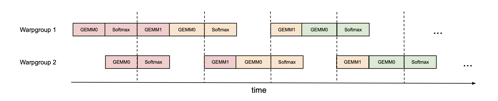
论文承认，实际运行时的乒乓不会像图上这么整齐，但它通常能提升性能。例如头维 128、序列长度 8192 的 FP16 前向，加了乒乓调度后从 570 TFLOPs/s 提到 620–640 TFLOPs/s（推算：约提升 9–12%）。对于多查询注意力（MQA）和分组查询注意力（GQA），论文沿用 FlashAttention-2 的做法，只调整张量的索引，让多个查询头直接读同一份 \(K,V\)，不在显存里复制。
3.3 warpgroup 内部的两级流水（算法 2）
乒乓调度利用的是两个 warpgroup 之间的独立性。论文进一步发现，即使在一个 warpgroup 内部，也能让一部分 softmax 指令和矩阵乘指令重叠。
难点是循环内部的先后依赖。在算法 1 里，softmax（第 18–19 行）要用第一个矩阵乘的输出 \(S^{(j)}\)，第二个矩阵乘又要用 softmax 的结果 \(P^{(j)}\)；第 17 行和第 21 行的“等待”把三者串成了一条线。打破它的办法是跨迭代流水：第 \(j\) 次迭代的第二个矩阵乘 \(P^{(j-1)}V_{j-1}\) 只依赖上一次的 softmax 结果，和第 \(j\) 次迭代的 softmax 没有关系，所以两者可以同时进行。代价是要在寄存器里多存一份分数块。论文称之为两级（2-stage）GEMM–softmax 流水，算法 2 用它替换算法 1 里消费者的那一段。
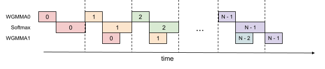
算法 2 的主循环用本站的话写出来是这样：
S_cur = WGMMA(Q_i, K_0^T)；等待 # 先单独算第 0 块
用 S_cur 算出 m、P_cur、l，并重缩放 O
for j in 1 .. T_c-1:
S_next = WGMMA(Q_i, K_j^T) # 第 9 行：提交，但不等
O = O + WGMMA(P_cur, V_{j-1}) # 第 11 行：提交，但不等
等 S_next 算完 # 第 12 行
用 S_next 算出新的 m、P_next、l # 第 13 行：这段 softmax 与第 11 行的矩阵乘同时进行
等 P_cur·V_{j-1} 算完，再按新的 m 重缩放 O # 第 14 行
S_cur = S_next；P_cur = P_next
O = O + WGMMA(P_last, V_{T_c-1})；等待；收尾写回这里有一个细节值得想清楚：第 14 行为什么要在 \(P_{\mathrm{cur}}V_{j-1}\) 算完之后才重缩放 \(O\)？因为 \(P_{\mathrm{cur}}\) 是以上一次的最大值为基准算的，这一项加进 \(O\) 之后，\(O\) 整体还处在旧基准上；第 13 行刚用 \(S_{\mathrm{next}}\) 更新了最大值，于是要把整个 \(O\) 乘一次 \(e^{m^{\mathrm{old}}-m^{\mathrm{new}}}\) 换到新基准，下一次迭代加进来的 \(P_{\mathrm{next}}V_{j}\) 才和它对得上。
理论上的好处之外，论文列了三个实际要考虑的问题：
- 编译器会重排指令。伪代码只是理想的执行顺序，NVCC 编译器经常为了优化把指令换位置，可能把精心安排的重叠打乱。作者检查了生成的 SASS，确认编译器生成了预期的重叠代码（附录 B.2）：softmax 的一部分被挪到了第一个 WGMMA 之前；第一个 WGMMA 被拆成 8 条
HGMMA，中间穿插着 softmax 的指数（MUFU.EX2）、求和与 FP32 到 FP16 的转换；第二个 WGMMA 的 12 条HGMMA连在一起，没有和别的指令交错，这也符合预期。 - 寄存器压力。两级流水要多存一份 \(S_{\mathrm{next}}\)，每个线程块多用 \(B_{r}\times B_{c}\times 4\) 字节的寄存器。举个例子（推算）：\(B_{r}=B_{c}=128\) 时是 64 KiB，分给两个消费者 warpgroup 的 256 个线程，每个线程多用 64 个寄存器，而每个消费者线程总共只有约 240 个。寄存器不够就会“溢出”到慢得多的内存里，所以流水级数和分块大小（也很吃寄存器）之间要权衡，论文的建议是按实测结果取舍。
- 三级流水。论文还试了三级版本（附录 B.3，算法 4），想让第 \(j+2\) 次的第一个 WGMMA、第 \(j+1\) 次的 softmax 和第 \(j\) 次的第二个 WGMMA 三者同时进行。结果比两级版本差，原因有二：SASS 显示编译器只让第一个 WGMMA 和 softmax 重叠，第二个 WGMMA 没有重叠，作者也不清楚编译器为什么这样排；同时它要多存一份 \(\tilde{P}\) 和缩放因子，只能改用更小的分块。
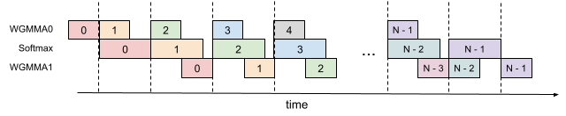
3.4 FP8 的效率问题：在内核里转置 V，并重排寄存器
第 2.4 节说过，换成 FP8 有两处排布冲突。论文分别处理。
第一处：\(V\) 的排布。\(Q,K,V\) 通常都是沿头维连续存放的。为了满足 FP8 WGMMA 对第二个矩阵乘的 k-major 要求，需要让 \(V\)（准确地说是搬进共享内存的 \(V\) 块）沿序列维连续。TMA 搬运时不能改变连续的方向，所以只剩两条路：(1) 在显存里事先把 \(V\) 转置好，或者 (2) 搬进共享内存之后在内核里转置。第 (1) 条又分两种：(1a) 把转置融合进前一个操作（比如旋转位置编码 RoPE）的收尾，这很难做进一个通用的库；(1b) 单独调用一个转置内核，交换序列维和头维的步长，这在推理这种受显存带宽限制的场景下太浪费，因为要把整个 \(V\) 多读写一遍。
FP8 版本的 FlashAttention-3 选了第 (2) 条：在内核里逐块转置。它用的是 LDSM（ldmatrix）和 STSM（stmatrix）两条指令：一个 warp 的线程一起把共享内存里的数据读进寄存器、再写回共享内存，粒度是 128 字节，并且在拷贝的同时可以转置排布。这两条指令很省寄存器，所以可以交给寄存器配额很少的生产者 warpgroup 去做。从第二次迭代开始，下一块 \(V\) 的转置可以安排在“前一块 \(V\) 和当前 \(K\) 的两个 WGMMA”执行期间完成，几乎不占额外时间。论文致谢里说，在内核中转置的点子来自 cuDNN 团队。
第二处：累加结果与操作数在寄存器里的分布不同。第一个矩阵乘的结果 \(S\)（进而 \(P\)）以 FP32 存在消费者线程的寄存器里，第二个矩阵乘要把 \(P\) 当作寄存器里的操作数 A。在 FP16 下，FP32 累加结果的分布方式和 16 位操作数 A 要求的分布方式恰好兼容，转换精度之后可以直接用。FP8 不行：每个 32 位寄存器要装 4 个 8 位数，操作数 A 要求每个线程手里的是同一行里相邻的 4 列，可累加结果给每个线程的是 \(\{0,1\}\) 和 \(\{8,9\}\) 这样隔开的列。论文图 3 和图 4 画出了第 0 行和第 8 行、线程 0–3、前 8 个元素的分布，下面用本站的示意图把同一件事画成颜色：
这样一来，\(P\) 的列顺序被打乱了，直接乘 \(V\) 会得到错误的结果。补救的办法利用了一个简单的事实：对两个矩阵相乘，如果把 \(P\) 的列和 \(V\) 的行按同一个顺序重排，乘积不变（\(PV=\sum_{k}P_{:,k}V_{k,:}\)，求和的先后顺序不影响结果）。而 \(V\) 反正要在内核里转置一遍，转置时顺手按同样的顺序重排它的行，就一分钱不多花。论文脚注 9 说，正是因为在内核里转置 \(V\) 多了这份自由度，才不再需要用线程间的 shuffle 指令交换寄存器（作者早先在 Colfax 的博客里用的是 shuffle）。
shfl_sync 在线程之间交换数据的通用做法（附录 B.7 给了代码），再在附录 B.8 说明配合转置后的 \(V\) 可以省掉 shuffle，只保留字节重排。两版的结论一致，只是讲法和详略不同。3.5 FP8 的精度问题：块量化与非相干处理
E4M3 只有 3 位尾数，误差本来就比 FP16、BF16 大。更麻烦的是，大模型的激活里常有离群值：少数几个数的绝对值远大于其余的数（论文引用了 LLM.int8() 和“Massive Activations”两项工作）。常见的 FP8 做法是逐张量缩放：\(Q\)、\(K\)、\(V\) 各用一个缩放因子。论文用了两种技术来降低误差。
块量化。不再整个张量共用一个缩放因子，而是每一块一个：把 \(Q\) 切成 \(B_{r}\times d\) 的块，把 \(K\)、\(V\) 切成 \(B_{c}\times d\) 的块，各自量化。这样，一个块里出现的大数只影响这一块的缩放，不会让别处的数也跟着变粗。量化这一步可以融合进注意力之前的某个操作（例如 RoPE）里，因为 RoPE 本身受显存带宽限制，多做几次乘法不会变慢。FlashAttention-3 本来就是按块计算的，每算出一块 \(S\)，乘上对应的 \(Q\) 块和 \(K\) 块的缩放因子即可，几乎没有额外开销。
正交矩阵 \(M\) 满足 \(MM^{\top}=I\)。用它同时右乘 \(Q\) 和 \(K\)，注意力分数不变：
所以可以先把 \(Q\)、\(K\) 各乘一个正交矩阵再量化，数学上什么都没改，改变的只是“数在各个坐标上怎么分布”。Hadamard 矩阵是一种特别方便的正交矩阵：元素全是 \(\pm1/\sqrt{d}\)，可以递归地构造（\(H_{2n}=\frac{1}{\sqrt{2}}\begin{bmatrix}H_{n}&H_{n}\\H_{n}&-H_{n}\end{bmatrix}\)），并且像快速傅里叶变换一样只要 \(O(d\log d)\) 次运算就能乘完，而一般的矩阵乘向量要 \(O(d^{2})\)。
它为什么能“摊开”离群值？乘以 Hadamard 矩阵后，新向量的每个坐标都是原向量所有坐标的 \(\pm\) 加权和，一个大数会被平均分到所有坐标上。用 4 维的例子算一下（推算）：\(x=(8,1,-1,1)\)，长度是 \(\sqrt{67}\approx8.19\)；乘以 \(H_{4}\) 后得到 \((4.5,\,2.5,\,4.5,\,4.5)\)，长度不变，但最大坐标从 8 降到了 4.5，各坐标的大小变得接近。在量化研究里，这种“没有哪个坐标特别突出”的性质叫非相干（incoherence）。前面再乘一个随机的 \(\pm1\) 对角矩阵，是为了保证对任何输入向量都大概率有这个效果：否则，恰好和某一行 Hadamard 向量同向的输入，乘完反而会变成一个尖峰。
非相干处理。量化成 FP8 之前，把 \(Q\) 和 \(K\) 都乘以同一个随机正交矩阵 \(M\)。按上面的等式，注意力输出不变；而 \(QM\)、\(KM\) 的每个元素都是 \(Q\)、\(K\) 一行里各元素的随机加权和，离群值被摊开，量化误差随之下降。实际选取的 \(M\) 沿用 QuIP（Chee 等）和 QuIP#（Tseng 等）的做法：随机 \(\pm1\) 对角矩阵与 Hadamard 矩阵的乘积，乘法只要 \(O(d\log d)\)，而且论文说它也能融合进 RoPE，不增加计算开销。同样的旋转思路后来被大量用于模型量化，本站的 QuaRot 精读页 讲的就是把 Hadamard 旋转用在权重、激活和 KV 缓存上。论文第 4.3 节验证，这两项技术合起来把误差最多降低 2.6 倍。
| 逐张量 FP8（E4M3）量化 | 不旋转 | 先乘随机 ±1 对角阵与 Hadamard 矩阵 |
|---|---|---|
| \(Q\) 的最大绝对值（均方根约 1.05） | 27–35 | 4.9–6.0 |
| \(S\) 全部元素的均方根误差 | 0.040–0.042 | 0.040–0.042（几乎不变） |
| \(S\) 在 softmax 权重 > 0.05 的位置上的均方根误差 | 0.17–0.20 | 0.083–0.090（约减半） |
| 输出 \(O\) 的均方根误差 | 0.012–0.016 | 0.007–0.009 |
hopper/flash_api.cpp，main 分支，2026-10-20）时看到，FP8 接口接收的缩放因子 q_descale、k_descale、v_descale 的形状是（批大小，KV 头数），也就是每条序列、每个 KV 头一个；非相干处理所需的 Hadamard 旋转也不在注意力内核里，需要调用方在量化之前自己完成。用开源代码复现论文的误差数字，要先自己补上这两步。3.6 反向传播：多一个专门累加 dQ 的 warp（附录 B.1）
反向传播也用 warp 专业化，只是角色多了一种。FlashAttention 系列的反向是按 \(K,V\) 的块并行的：每个线程块固定一块 \(K_{j},V_{j}\)，遍历所有的 \(Q_{i}\) 块，在片上累加出 \(dK_{j}\) 和 \(dV_{j}\)。麻烦在 \(dQ\)：同一块 \(dQ_{i}\) 要收集所有 \(K_{j}\) 块的贡献，而这些贡献来自不同的线程块，只能在显存里做原子加。很多线程块往同一个位置写，就会互相争抢。
FlashAttention-3 的做法（算法 3）是在生产者和消费者之外，再设一个 dQ 写回 warp：
- 先用一个预处理内核算出 \(D=\mathrm{rowsum}(dO\circ O)\)（第 2.1 节推导过的那个量），写回显存。
- 生产者先用 TMA 载入本线程块的 \(K_{j},V_{j}\)，然后依次把每一块 \(Q_{i}\)、\(dO_{i}\) 搬进环形缓冲。
- 消费者对每一块 \(Q_{i}\)：用 SS-GEMM 重算 \(S=Q_{i}K_{j}^{\top}\)，用 SS-GEMM 算 \(dP=dO_{i}V_{j}^{\top}\)；用存下的 \(L_{i}\) 得到 \(P=\exp(S-L_{i})\)，再算 \(dS=P\circ(dP-D_{i})\)；用 RS-GEMM 累加 \(dV_{j}\mathrel{+}=P^{\top}dO_{i}\) 和 \(dK_{j}\mathrel{+}=dS^{\top}Q_{i}\)；最后用 SS-GEMM 算出这一块对 \(dQ_{i}\) 的贡献 \(dS\,K_{j}\)，写进共享内存，通知 dQ 写回 warp。
- dQ 写回 warp等到这份局部的 \(dQ\) 准备好，就借助信号量把它原子地加到显存里的 \(dQ_{i}\) 上。
把原子加交给单独的 warp，好处是写回时的争抢和等待不会挡住其他 warp 去做下一个矩阵乘。一次迭代里正好是第 2.1 节数过的五个矩阵乘。
4 实验：快了多少，准了多少
4.1 实验设置：和谁比，TFLOPs/s 怎么算
FlashAttention-3 用 CUTLASS 库提供的 WGMMA、TMA 等底层抽象实现。所有测速都在一张 H100 80GB SXM5（700 W 版）上进行，GPU 时钟固定在 1830 MHz，也就是计算 989 TFLOPs/s 理论峰值时用的频率；每个测试重复 100 次取平均。软件版本是论文写作时（2024 年 5 月）的最新版：CUDA 12.3、cuDNN 9.1.1.17、CUTLASS 3.5、FlashAttention 2.5.8、Triton nightly 3.0.0、PyTorch 2.3.0。
对比的对象有四个：
- 标准注意力：PyTorch 里把 \(S\)、\(P\) 写进显存的普通实现。
- FlashAttention-2：官方 CUDA 实现（2.5.8 版），用的是 Ampere 指令。
- Triton：用 Triton 语言写的 FlashAttention-2，论文说明它用到了 H100 专用的指令。
- cuDNN：NVIDIA 闭源库里为 H100 优化过的 FlashAttention-2 式实现，是最强的对手。
测试设置：序列长度取 512、1k、2k、4k、8k、16k，批大小随之调整，使总 token 数固定为 16k；模型隐藏维度固定为 2048，头维取 64、128 或 256，对应 32、16 或 8 个注意力头；分别测有无因果掩码。速度用 TFLOPs/s 表示，其中运算量按公式计算：
系数 4 来自两个矩阵乘，每个矩阵乘做 \(2\cdot\text{seqlen}^{2}\cdot\text{头维}\) 次浮点运算（乘和加各算一次）。因果掩码下大约只算一半的分数，所以除以 2。反向乘 2.5 的理由在第 2.1 节讲过：前向 2 个矩阵乘，反向 5 个。拿消融实验的设置验算一遍（推算）：批 4、序列 8448、16 个头、头维 128，前向运算量是 \(4\times8448^{2}\times128\times16\times4\approx2.34\times10^{12}\) 次，论文表 2 测得 3.538 ms，相除正好是 661 TFLOPs/s。
4.2 FP16 前向：比 FlashAttention-2 快 1.5–2 倍，长序列超过 cuDNN
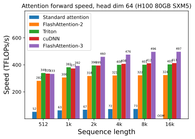
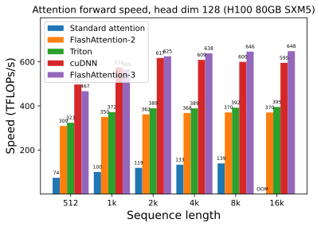
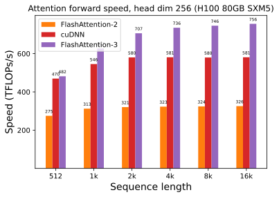
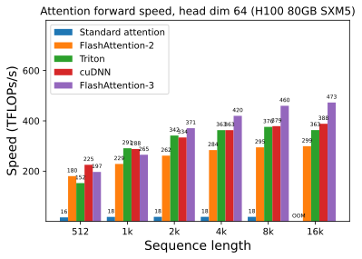
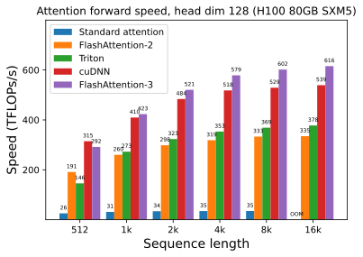
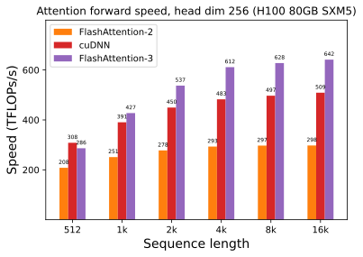
论文的总结是：前向比 FlashAttention-2 快约 1.5–2.0 倍，比标准注意力快 3–16 倍；对 1k 及以上的中长序列，FlashAttention-3 甚至超过了为 H100 专门优化、闭源的 cuDNN。从图上读出的数字看，这个总结大体成立，但有两处需要补充。第一，提速倍数和头维关系很大：16k、无掩码时，头维 64 是 1.53 倍，头维 128 是 1.75 倍，头维 256 是 2.32 倍（推算），最后一个超出了论文说的 2.0 倍上限。第二，“1k 起超过 cuDNN”在头维 128、无掩码的 1k 处并不成立（565 对 574），差距很小，但说明在短序列上两者大致打平。
头维 64 的绝对速度最低（最高 497 TFLOPs/s，约为峰值的 50%，推算），这和第 3.2 节的估算吻合：头维 64 时，指数运算的理论耗时和矩阵乘一样长，即使藏得再好，指数单元本身也接近满负荷，Tensor Core 很难跑满。头维 256 时指数只占矩阵乘的四分之一，于是能跑到 756 TFLOPs/s，约 76% 的峰值（推算）。论文正文写的“最高 740 TFLOPs/s、75%”比图 5(e) 的最高柱子（756）略低，论文没有解释原因，可能是正文和图来自不同时间的测量；差别很小，不影响结论。
4.3 反向：快 1.5–1.75 倍
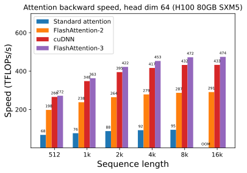
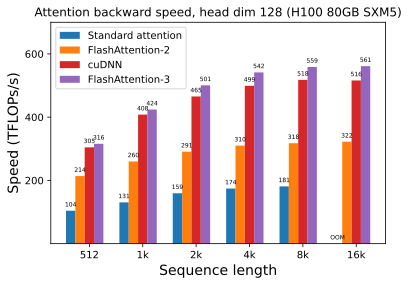
反向比 FlashAttention-2 快 1.5–1.75 倍（论文）。从图上算，头维 128 时从 512 的 1.48 倍到 8k 的 1.76 倍，头维 64 时从 1.37 倍到 1.64 倍（推算），短序列时略低于论文给的区间。反向的最高速度 561 TFLOPs/s 约为峰值的 57%（推算），明显低于前向，因为反向每次迭代有五个矩阵乘、更多的中间量要放在寄存器和共享内存里，还要做 \(dQ\) 的原子累加。论文没有给出有因果掩码或头维 256 的反向结果。
4.4 FP8 前向：接近 1.2 PFLOPs/s，和 cuDNN 互有胜负
GPU 一次能同时运行的线程块数量有限。如果一个内核有 133 个线程块，而 132 个 SM 每个只能放一个，就会先跑完 132 个，再单独跑剩下那 1 个，第二轮里 131 个 SM 空着。这种因为任务数不是 SM 数的整数倍而浪费的现象叫波次量化（wave quantization）。所以 FP8 的测试特意把 4k 以上的序列长度取成 132 的倍数：4224、8448、16896。
持久化内核（persistent kernel）是另一种对策：只启动和 SM 数量一样多的线程块，每个线程块用一个循环不断领取新的分块任务。这样不仅能平衡负载（因果掩码下不同查询块的工作量差别很大），还能让一个任务的收尾（写回输出）和下一个任务的开头（载入 \(Q\)）重叠，让 Tensor Core 少停顿。论文脚注 10 说，测速时 FP16 版本已经用上了持久化内核和负载均衡，FP8 版本还没有。
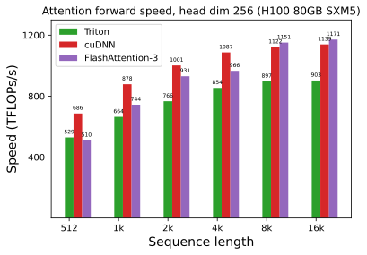
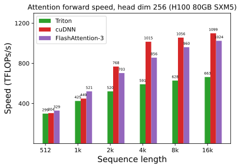
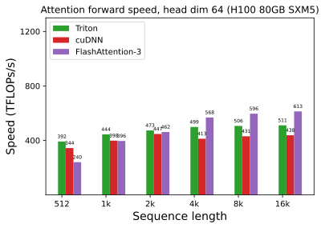
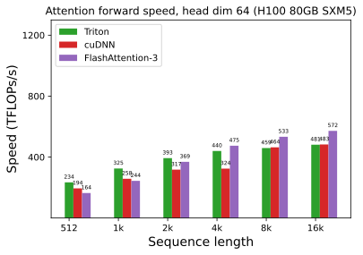
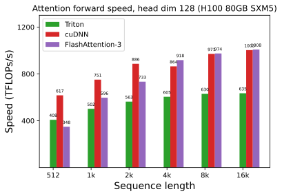
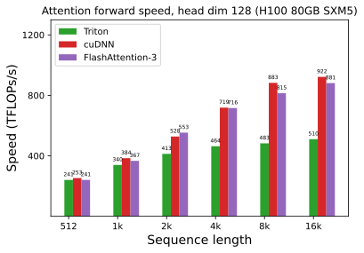
这些结果和论文脚注 2 的说法一致：头维 64 时 FP8 版本领先 cuDNN；头维 128 和 256 时，无因果掩码基本打平，有因果掩码则落后。论文把短序列和因果掩码下的落后部分归因于 FP8 版本还没有持久化内核和负载均衡（脚注 10）。
FP8 相对于 FP16 快了多少？取最长序列、无掩码的 FlashAttention-3 对比（推算，序列长度 16896 对 16k，略有出入）：头维 256 是 1171 对 756，约 1.55 倍；头维 128 是 1008 对 648，约 1.56 倍；头维 64 是 613 对 497，只有约 1.23 倍。Tensor Core 的 FP8 吞吐是 FP16 的 2 倍，实测没有翻倍，主要原因还是第 3.2 节的那笔账：矩阵乘变快了一倍，指数运算却没有变快，头维 128 时指数的理论耗时已经和矩阵乘相当；再加上 \(V\) 的转置、寄存器重排这些 FP16 没有的额外工作。按 FP8 理论峰值（FP16 的 2 倍，约 1979 TFLOPs/s，推算）算，1171 TFLOPs/s 约为 59%。
4.5 消融：warp 专业化和两级流水各贡献多少
论文固定一个设置做消融：无因果掩码的 FP16 前向，批 4、序列 8448、16 个头、头维 128。分别去掉两级 GEMM–softmax 流水或 warp 专业化中的一项（论文表 2）：
论文据此说明，异步（warp 专业化）和 GEMM–softmax 重叠两项改进都带来了显著的提速，合起来从 570 提升到 661 TFLOPs/s。这里的 570 恰好也是第 3.2 节里加乒乓调度之前的数字。
4.6 数值误差：FP16 和 FlashAttention-2 一样准，FP8 比基线准 2.6 倍
已经有研究专门讨论过 FlashAttention 的数值误差（论文引用了 “Is flash attention stable?”）。作者比较了 FlashAttention-2、FlashAttention-3 和标准注意力，以 FP64 精度的实现作为参考答案。为了模拟大模型中的离群特征，\(Q,K,V\) 的每个元素按下面的分布生成：
意思是每个元素先取一个标准正态数，再以 0.1% 的概率额外加上一个标准差为 10 的正态数。这样大多数元素在 ±3 以内，少数元素可以到几十。误差用均方根误差（RMSE）衡量，结果见论文表 3：
| 精度 | 方法 | RMSE |
|---|---|---|
| FP16 | 标准注意力 | 3.2e-4 |
| FlashAttention-2 | 1.9e-4 | |
| FlashAttention-3 | 1.9e-4 | |
| FP8（E4M3） | 基线 FP8 注意力（逐张量缩放） | 2.4e-2 |
| FlashAttention-3（块量化 + 非相干处理） | 9.1e-3 | |
| FlashAttention-3，去掉块量化 | 9.3e-3 | |
| FlashAttention-3，去掉非相干处理 | 2.4e-2 |
先看 FP16。FlashAttention-2 和 FlashAttention-3 的误差都是 1.9e-4，比标准实现的 3.2e-4 低约 1.7 倍。原因是 FlashAttention 把 softmax 的中间结果（包括重缩放）都放在 FP32 寄存器里，而标准实现会把 \(S\)、\(P\) 以 FP16 写进显存再读回来，多了几次舍入。这说明 FlashAttention-3 的种种异步改造没有损失精度，结果和 FlashAttention-2 一样。
再看 FP8。基线 FP8 注意力用逐张量缩放，矩阵乘在 FP32 里累加，softmax 的中间结果保存为 FP16。FlashAttention-3 的 FP8 版本误差是 9.1e-3，比基线的 2.4e-2 低约 2.6 倍。两行消融把功劳分得很清楚：去掉块量化，误差只从 9.1e-3 变成 9.3e-3；去掉非相干处理，误差回到和基线一样的 2.4e-2。在这组测试数据上，误差的下降几乎全部来自非相干处理。
- 测试数据是人为生成的高斯分布加随机离群值，离群值出现在随机位置；真实大模型里的离群值往往集中在固定的几个通道上，分布不同，两种技术各自的贡献也可能不同。
- 它衡量的是单个注意力算子输出的 RMSE，论文没有用 FP8 注意力训练或推理一个真实模型，也没有报告下游任务的精度变化。论文在第 5 节把“低精度注意力对大规模训练的影响”列为未来工作。
- 即使准了 2.6 倍，FP8 的误差（9.1e-3）仍比 FP16（1.9e-4）大约 48 倍（推算）。
- 本站补充：DeepSeek-V3 的技术报告发现 Hopper 的 FP8 矩阵乘在 Tensor Core 内部累加时只保留约 14 位精度（见 DeepSeek-V3 精读页）。注意力里每次累加的长度是头维或 \(B_{c}\)（几十到两百多），比训练中上千维的矩阵乘短得多，影响应该较小，但 FlashAttention-3 论文没有单独分析这一点。
4.7 结果的份量
把上面的数字放回测量条件里，可以这样看待它们：
- 对手选得怎么样。FlashAttention-2（2.5.8 版）是当时最新的官方实现，但它用的是 Ampere 指令，没有为 Hopper 调过；拿它做主要对照，1.5–2.0 倍的提速里有相当一部分是“换用 Hopper 指令”本身带来的。更有说服力的对照是 cuDNN 9.1.1.17：它是 NVIDIA 为 H100 专门优化的闭源实现，在 2024 年 5 月可以算最强的对手。对它，FlashAttention-3 的 FP16 前向和反向在中长序列上领先，短序列上互有胜负；FP8 前向则整体上不比它强。Triton 版用了 Hopper 指令，FP16 前向比 FlashAttention-2 快一些（16k、无掩码时头维 64 为 403 对 324，头维 128 为 395 对 370），但离 FlashAttention-3 还很远，说明光换指令不够，还要重新编排执行顺序。
- 硬件条件。只测了一张 H100 SXM5，而且把时钟锁在 1830 MHz。锁频让测量稳定，也让“占峰值的比例”可以直接算；实际部署时 GPU 会随功耗和温度调频，长时间满负荷运行的速度可能低于图上的数字（本站提醒）。H100 PCIe、H800、H20 等型号的 SM 数、频率或带宽不同，结果会变；Hopper 之前的 GPU 没有 TMA 和 WGMMA，根本跑不了这套内核；Blackwell 需要重新设计（见“后来怎么样了”）。
- 指标和设置。所有数字都是单个注意力算子的速度，不是端到端训练或推理的速度；总 token 数固定为 16k，隐藏维度 2048，属于训练和长上下文预填充的典型形状。解码阶段每次只有一个或几个查询 token，瓶颈在读 KV 缓存的显存带宽，论文 arXiv 版没有测这种情况，并把“为推理优化”列为未来工作（NeurIPS 版补了附录，见第 6 节）。
- 占峰值多少。摘要里的“75%”只在头维 256 时达到；最常用的头维 128 是约 65%，头维 64 约 50%；反向最高约 57%；FP8 最高约 59%（均为推算，见下表）。
- 误差。FP16 版本没有精度代价；FP8 版本的“误差低 2.6 倍”是相对逐张量量化的基线，测试数据是合成的，没有真实模型上的精度评估。
| 设置（最长序列） | FlashAttention-2 | cuDNN | FlashAttention-3 | FA3 ÷ FA2 | FA3 占峰值 |
|---|---|---|---|---|---|
| FP16 前向，无掩码，头维 64 | 324 | 413 | 497 | 1.53 | 50% |
| FP16 前向，无掩码，头维 128 | 370 | 595 | 648 | 1.75 | 66% |
| FP16 前向，无掩码，头维 256 | 326 | 581 | 756 | 2.32 | 76% |
| FP16 前向，因果，头维 128 | 335 | 539 | 616 | 1.84 | 62% |
| FP16 反向，无掩码，头维 128 | 322 | 516 | 561 | 1.74 | 57% |
| FP8 前向，无掩码，头维 256 | — | 1139 | 1171 | — | 59% |
| FP8 前向，因果，头维 128 | — | 922 | 881 | — | 45% |
单位 TFLOPs/s，读自论文图 5、6、7、9（arXiv v2）；FP16 行的序列长度是 16k，FP8 行是 16896。最后两列是本站推算：FP16 峰值按 989 TFLOPs/s，FP8 峰值按其 2 倍约 1979 TFLOPs/s。
5 讨论、局限、结论与相关工作
作者的结论是：异步执行和低精度这类新的编程技术与硬件特性，能对注意力的效率和精度产生很大的影响。FlashAttention-3 比 FlashAttention-2 快 1.5–2.0 倍，FP8 版本的误差比标准的逐张量量化低 2.6 倍。论文列出三项局限，作为未来工作：
- 为大模型推理优化。本文的测速都是训练和预填充式的形状，没有针对解码阶段（每次只有很少几个查询 token）做优化。
- 给 FP8 内核加上持久化内核设计。这正是第 4.4 节 FP8 在短序列和因果掩码下落后于 cuDNN 的部分原因。
- 弄清低精度注意力在大规模训练中的影响。论文只测了单个算子的数值误差。
作者还认为，虽然论文只针对 Hopper，这些技术应该也适用于其他具备足够异步执行和低精度能力的加速器（论文脚注 1 有同样的说法）。
相关工作（附录 A）分成四块，读起来能看出 FlashAttention-3 的定位：
- 近似注意力和注意力变体。稀疏注意力只算一部分分数（固定模式、滑动窗口、哈希、路由），低秩方法假设注意力矩阵低秩（核函数、随机投影），两者也可以结合。它们通常达不到标准注意力的模型质量，所以大多数大规模模型没有采用。多查询注意力（MQA）、分组查询注意力（GQA）和 DeepSeek-V2 的多头潜在注意力（MLA）是为了缩小 KV 缓存，但它们改变的只是 \(Q,K,V\) 怎么得到，核心计算 \(\mathrm{softmax}(QK^{\top})V\) 没变，所以对标准注意力的任何加速都能直接惠及它们。Ring Attention 等分布式方法能把上下文扩展到上百万 token，它们以 FlashAttention 为基本算子，同样受益。
- 替代架构。RWKV、H3、MEGA、RetNet、Mamba、xLSTM 等从线性注意力和 RNN 的联系出发，用更复杂的递推代替注意力。但 Jamba、Zamba、Megalodon、Mamba2-hybrid 这类中大型模型为了质量仍保留了很多注意力层，所以加速注意力对它们也有用。
- 低精度注意力。之前的量化工作主要是为推理压缩 KV 缓存，例如 KVQuant 和 KIVI 表明 KV 缓存可以压到 4、3 甚至 2 位。本文借用的是 QuIP 和 QuIP# 里的非相干处理。论文也指出，训练中的量化仍然困难，因为训练稳定通常需要更高精度。
- 硬件感知的算法。本文属于针对具体微架构的调优：用新指令、采用原生异步的编程模型。另一个方向的例子是 LeanAttention，它针对解码阶段 GPU 占用率低、显存带宽压力大的问题，借鉴 Stream-K 的负载均衡思路。针对特定硬件优化矩阵乘的大量文献，也用到了很多相同的技术。
6 NeurIPS 正式版：数字更新与新增的附录
数字和环境的变化。正式版摘要改为：BF16 最高 840 TFLOPs/s（峰值的 85%），FP8 达到 1.3 PFLOPs/s；引言里矩阵乘内核的利用率写作 80–85%（arXiv 版是 80–90%）；对 cuDNN 的 FP8 比较改为“长序列上持平”。测速改用 BF16 输入，软件环境更新到 2024 年 10 月的版本：CUDA 12.3、cuDNN 9.5.0.50、CUTLASS 3.6、FlashAttention 2.6.3、Triton 3.1、PyTorch 2.5.0；每个测试重复 10 次取平均；FP8 的序列长度改成 512 到 16384 的 2 的幂。消融（表 2）和数值误差（表 3）的数字没有变。由于对手的版本也一起更新了，两版各自内部的比较都是公平的，但两版之间的绝对数字不能混用。引用峰值时，应注明是 arXiv 版的 740 TFLOPs/s（FP16）还是正式版的 840 TFLOPs/s（BF16）。
新增的附录。正式版把附录从 B.3 扩展到 B.9，补充了很多工程细节：
- B.4 变长序列。TMA 处理变长序列需要改写张量映射，开销大，所以载入 \(Q\) 时总是按整块读，越界的行由 TMA 填零、再由掩码去掉；固定长度时用大小为 2 的线程块簇做 TMA 多播（两个线程块合读同一份 \(K,V\)），变长时不能用，性能约下降 2%。
- B.5 掩码。掩码运算很贵，只在必要的块上做：因果和变长只处理最后一个 \(K\) 块，局部（滑动窗口）注意力只处理开头和结尾的几个块。
- B.6 持久化内核。启动和 SM 数一样多的线程块（H100 SXM5 上是 132 个），由调度器分配分块任务，让一个任务的收尾和下一个任务的开头重叠。
- B.7、B.8 FP8 的寄存器交换和 \(V\) 的转置。给出了用
__byte_perm和__shfl_sync交换寄存器的代码，以及 LDSM/STSM 加字节重排的转置代码，并写出了第 3.4 节用到的等式：\(PV=\mathrm{colperm}_{\sigma}(P)\cdot\mathrm{rowperm}_{\sigma}(V)\)。 - B.9 推理。解码时查询只有一个或几个 token，注意力变成受显存带宽限制，要比的是读 KV 缓存的速度而不是 Tensor Core 利用率；而且只按查询长度并行会缺少并行度。正式版为此加了两项改动：Split-KV（即 Flash-Decoding），沿 KV 序列切成几段，由不同线程块分别算出部分输出和 log-sum-exp，再用一个规约内核合并；GQA 打包，把共享同一个 KV 头的多个查询头打包进同一个 \(Q\) 块，利用 WGMMA 每个 warpgroup 64 行的宽度，最多能快到 GQA 比例那么多倍。此外还有 Kai Londenberg 贡献的 PagedAttention 支持：新写了一种让 TMA 按块表做地址转换的加载操作。块表和分页的概念见 vLLM 精读页第 4 节。
正式版的局限一节也相应删去了“给 FP8 内核加持久化设计”这一条，只保留“为推理优化”和“低精度注意力对大规模训练的影响”。
7 后来怎么样了
代码。FlashAttention-3 以 beta 版的形式放在官方仓库的 hopper/ 目录里。截至 2026-10-20，官方 README 写的发布范围是 FP16/BF16 的前向与反向、FP8 的前向，要求 H100/H800 GPU 和 CUDA 12.3 以上（推荐 CUDA 12.8）。这个目录后来持续扩展，现在能看到分页 KV 缓存（paged_kv.h）、Split-KV 的合并内核（flash_fwd_combine*）、GQA 打包（pack_gqa.h）以及针对 MLA 解码的测速脚本（benchmark_mla_decode.py）等文件，也就是第 6 节说的推理方向的工作。
被推理引擎和框架采用。以下均为各项目官方文档在 2026-10-20 的说法：
- vLLM：注意力后端文档（v0.20.2）写明，FlashAttention 后端默认在 SM100 及以上（Blackwell）用 FA4，在 SM90（Hopper）用 FA3，其余用 FA2，可用
--attention-config.flash_attn_version指定；表中 FA3 这一行支持 FP8 格式的 KV 缓存。vLLM 本身的 KV 缓存管理见 vLLM 精读页。 - SGLang：注意力后端文档写明，在 H100、H200、H20 等 Hopper 机器上，CUDA 12.3 以上时 MHA 和 MLA 模型默认都用
fa3后端。SGLang 的设计见 SGLang 精读页。 - PyTorch：发布时 PyTorch 官方博客转发了 FlashAttention-3 的介绍。之后 PyTorch 在
torch.nn.attention里加了可插拔的 flash attention 实现：2.11 及以后的文档中，activate_flash_attention_impl接受"FA3"和"FA4"两个标识；默认仍是 FA2，需要用户主动开启。 - Hugging Face Transformers：
attn_implementation="flash_attention_3"是可选的注意力后端之一，另有分页版本"paged|flash_attention_3"。
FlashAttention-4：Blackwell 上，指数运算成了主角。第 3.2 节的那笔账在下一代硬件上变得更尖锐。据本站的 FlashAttention-4 拆解页，Blackwell（B200）把每个 SM 每周期的 Tensor Core 吞吐从 4096 提到 8192 次浮点运算，而 MUFU 仍是每周期 16 次指数，共享内存读带宽也没变。按本页的推算方法，头维 128 时指数的理论耗时已经和矩阵乘一样长，相当于 Hopper 上的 FP8；FlashAttention-3 论文里“FP8 的情况更糟”这句话，在 Blackwell 上成了 BF16 的常态。FlashAttention-4（Zadouri、Hoehnerbach、Shah、Liu、Thakkar、Dao，arXiv 2026-03）沿用 FlashAttention-3 的 warp 专业化和异步流水，又加了新的手段：用 FMA 单元上的多项式近似分担一部分指数运算，有条件地跳过 softmax 的重缩放，在反向里利用 Blackwell 的张量内存（TMEM）和 2-CTA 矩阵乘减少共享内存流量。它在 B200 上的 BF16 前向最高 1613 TFLOPs/s（约 71% 峰值），比 cuDNN 9.13 最多快 1.3 倍；整个内核用嵌在 Python 里的 CuTe-DSL 编写。官方 README 现在把 FA4 描述为同时面向 Hopper 和 Blackwell。
更好写的内核：ThunderKittens 和 FlexAttention。FlashAttention-3 的代码建立在 CUTLASS 的 C++ 模板上，每支持一种新的注意力变体都要手写大量代码。论文引言里引用过的 ThunderKittens（斯坦福 Hazy Research，arXiv 2410.20399）提供以“块”为基本单位的 CUDA 编程抽象，目标是用更少、更清楚的代码写出高性能的 Hopper 内核。FlexAttention（PyTorch 团队，arXiv 2412.05496）让用户用几行 Python 写出对分数的修改和掩码规则，再由编译器生成融合的注意力内核；它的论文报告，在因果掩码下前向是 FlashAttention-2 的 1.00–1.22 倍。后来 PyTorch 博客《FlexAttention + FlashAttention-4: Fast and Flexible》介绍了一个基于 CuTe-DSL 的 FA4 后端，让 FlexAttention 在 Hopper 和 Blackwell 上也能用上 FlashAttention 式的手调内核。
想看 FlashAttention 1–3 的可交互架构图和配套简答题，见结构拆解页。
作者
单位按论文署名。背景只列可公开查证的信息：作者主页、实验室与机构页面，以及论文本身。
影响力
- 引用：见页首（Semantic Scholar 快照）。
- 发表：NeurIPS 2024，Spotlight 海报（会议页面）。
- 开源：代码在 Dao-AILab/flash-attention 的
hopper/目录，与 FA1、FA2、FA4 共用一个仓库；该仓库截至 2026-10-20 有 25,162 个 star、3,174 个 fork，BSD-3-Clause 许可。作者博客：tridao.me；PyTorch 官方博客也发布了 介绍文章。 - 采用：vLLM 和 SGLang 在 Hopper 上默认使用 FA3；PyTorch（2.11 起的文档）和 Hugging Face Transformers 提供 FA3 作为可选后端（见上一节，均为 2026-10-20 查看的官方文档）。
延伸阅读
- 相关精读：FlashAttention、QuaRot、NSA 原生稀疏注意力、FlashAttention-4
- FlashAttention 1 / 2 / 3 结构拆解：可交互的前向流程图、三代对比、简答题。
- FlashAttention-4 拆解：Blackwell 上的瓶颈转移、软件指数与条件重缩放。
- FP8 格式拆解：E4M3 与 E5M2 的位布局、缩放因子。
- 推理基础：roofline、预填充与解码的访存特性。
- AI Infra 路线（旧版）
- 返回论文书架
本页是对论文的中文精读笔记，正文为本站撰写，并非翻译。数字与结论以原文为准：arXiv:2407.08608（v2）；第 6 节对照的是 NeurIPS 2024 正式版。原文图 1、2、5、6、7、8、9 取自 arXiv v2（作者 Jay Shah、Ganesh Bikshandi、Ying Zhang、Vijay Thakkar、Pradeep Ramani、Tri Dao），以 CC BY 4.0 许可发布，未做修改；其余示意图为本站绘制。